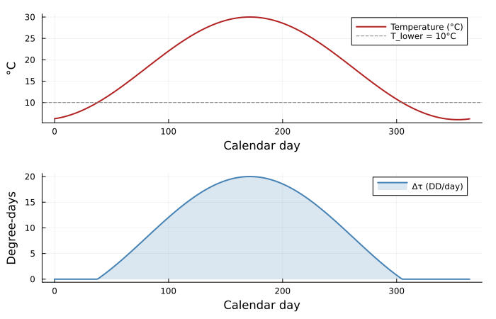
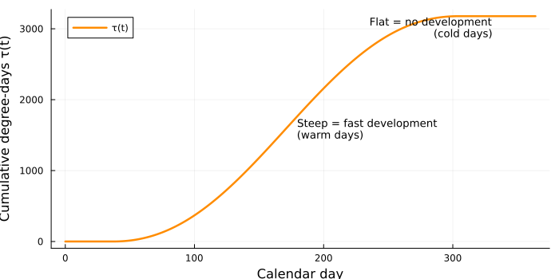
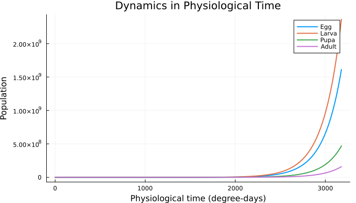
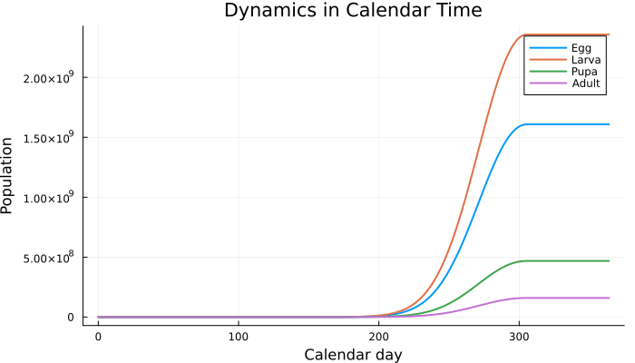
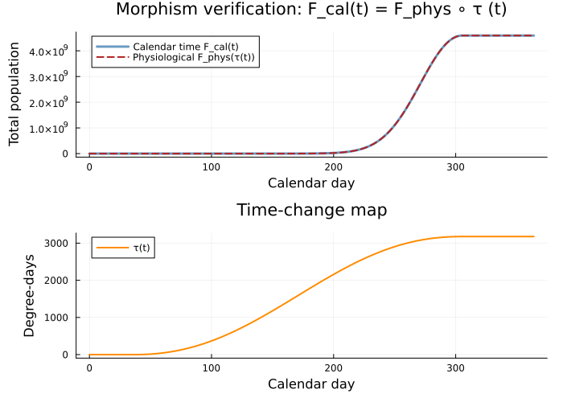
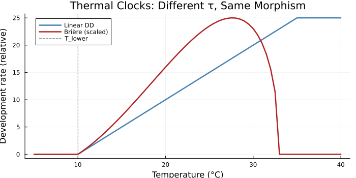
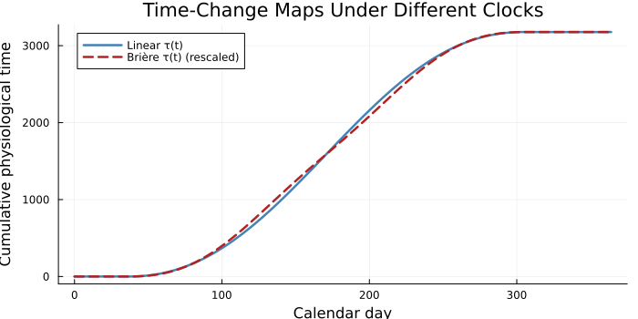
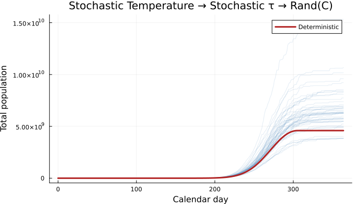

Time Reparametrization Morphisms
Simon Frost
Overview
Physiologically based demographic models (PBDMs) use degree-days — accumulated thermal units above a developmental threshold — rather than calendar days as the time axis for population dynamics. This vignette shows that the degree-day transformation is a monotone reindexing between two time posets, and that dynamics in calendar time and physiological time are related by precomposition with this map.
Concretely, if G is a continuous-time rate matrix (generator) for a stage-structured population measured in degree-days, then:
- Physiological-time dynamics: n(s) = e<sup>s G</sup> n(0), where s counts degree-days.
- Calendar-time dynamics: n(t) = e<sup>τ(t) G</sup> n(0), where $\tau(t) = \sum\_{d=0}^{t-1} \Delta\tau(d)$ is cumulative degree-day accumulation.
These are exactly the same trajectory, viewed through different clocks. The map τ: (ℕ, ≤ ) → (ℝ<sub> ≥ 0</sub>, ≤ ) is a monotone function (order-preserving, not necessarily additive) from calendar days to degree-days. In a category-theoretic reading:
F<sub>cal</sub> = F<sub>phys</sub> ∘ τ
where F<sub>phys</sub> is the physiological-time dynamics functor. The degree-day map τ is an endomorphism of the time poset, and reparametrization is precomposition — the most basic functorial operation.
When temperature is deterministic, this is a purely order-theoretic construction and no stochastic machinery is needed. The Rand(C) framework enters only when temperature is itself a random variable, making τ stochastic.
Setup
using CategoricalPopulationDynamics
using CategoricalPopulationDynamics: ⊕, ⊘, ⋉
using LinearAlgebra
using StructuredPopulationCore: lambda
using Statistics: mean, std
using Random; Random.seed!(42)
using Plots
# Development rate types from the PBDM package
# We define them inline to keep this vignette self-containedSince PhysiologicallyBasedDemographicModels.jl may not be in the vignette’s environment, we define the development-rate functions directly. These mirror the types in that package (LinearDevelopmentRate, BriereDevelopmentRate).
"""Linear degree-day accumulation: r(T) = max(0, min(T - T_L, T_U - T_L))."""
function linear_dd(T; T_lower=10.0, T_upper=35.0)
return max(0.0, min(T - T_lower, T_upper - T_lower))
end
"""Brière nonlinear rate: r(T) = a·T·(T - T_L)·√(T_U - T) for T_L ≤ T ≤ T_U."""
function briere_rate(T; a=2.56e-5, T_lower=10.0, T_upper=33.0)
(T <= T_lower || T >= T_upper) && return 0.0
return a * T * (T - T_lower) * sqrt(T_upper - T)
endMain.Notebook.briere_rateA Stage-Structured Insect Model
We model a generic temperate-zone pest insect with four life stages, each represented by 3 Erlang substages to produce realistic (non-exponential) stage duration distributions. All development is driven by a shared thermal clock with a lower threshold of 10 °C (linear degree-day model).
<table> <thead> <tr> <th>Stage</th> <th>Required DD</th> <th>Substages</th> <th>Rate per DD</th> </tr> </thead> <tbody> <tr> <td>Egg</td> <td>88</td> <td>3</td> <td>3/88 ≈ 0.0341</td> </tr> <tr> <td>Larva</td> <td>350</td> <td>3</td> <td>3/350 ≈ 0.00857</td> </tr> <tr> <td>Pupa</td> <td>210</td> <td>3</td> <td>3/210 ≈ 0.01429</td> </tr> <tr> <td>Adult</td> <td>—</td> <td>1</td> <td>fecundity + mortality per DD</td> </tr> </tbody> </table>
The key assumption for an exact time-change equivalence: all vital rates are measured per degree-day, including adult fecundity and mortality. This is biologically reasonable for ectotherms whose metabolic rates scale with temperature.
# Stage durations in degree-days
DD_egg = 88.0
DD_larva = 350.0
DD_pupa = 210.0
k = 3 # substages per immature stage
# Per-DD rates
γ_e = k / DD_egg # egg substage advancement rate
γ_l = k / DD_larva # larva substage advancement rate
γ_p = k / DD_pupa # pupa substage advancement rate
μ_a = 0.005 # adult mortality rate per DD
f = 0.15 # adult fecundity (eggs per DD per adult)0.15We build this as a ValuedProjectionNet with named transitions, then extract the structure.
stages = [:e1, :e2, :e3, :l1, :l2, :l3, :p1, :p2, :p3, :adult]
# Define transitions as VPN
vpn = ValuedProjectionNet(stages,
:egg_dev => [(:e1 => :e2) => γ_e, (:e2 => :e3) => γ_e, (:e3 => :l1) => γ_e],
:larva_dev => [(:l1 => :l2) => γ_l, (:l2 => :l3) => γ_l, (:l3 => :p1) => γ_l],
:pupa_dev => [(:p1 => :p2) => γ_p, (:p2 => :p3) => γ_p, (:p3 => :adult) => γ_p],
:fecundity => [(:adult => :e1) => f],
:mortality => [(:adult => :adult) => -μ_a]
)ValuedProjectionNet{Float64}(CategoricalPopulationDynamics.LabelledProjectionNet:
S = 1:1
T = 1:5
Src = 1:5
Tgt = 1:5
Name = 1:0
src_t : Src → T = [1, 2, 3, 4, 5]
src_s : Src → S = [1, 1, 1, 1, 1]
tgt_t : Tgt → T = [1, 2, 3, 4, 5]
tgt_s : Tgt → S = [1, 1, 1, 1, 1]
sname : S → Name = [:stage]
tname : T → Name = [:egg_dev, :larva_dev, :pupa_dev, :fecundity, :mortality], [:e1, :e2, :e3, :l1, :l2, :l3, :p1, :p2, :p3, :adult], Dict(:egg_dev => [(:e1 => :e2) => 0.03409090909090909, (:e2 => :e3) => 0.03409090909090909, (:e3 => :l1) => 0.03409090909090909], :larva_dev => [(:l1 => :l2) => 0.008571428571428572, (:l2 => :l3) => 0.008571428571428572, (:l3 => :p1) => 0.008571428571428572], :pupa_dev => [(:p1 => :p2) => 0.014285714285714285, (:p2 => :p3) => 0.014285714285714285, (:p3 => :adult) => 0.014285714285714285], :mortality => [(:adult => :adult) => -0.005], :fecundity => [(:adult => :e1) => 0.15]))The Generator Matrix
The continuous-time generator G has off-diagonal entries equal to transition rates and diagonal entries ensuring columns sum to zero (for a closed population with mortality as a sink).
n_stages = length(stages)
function build_generator(γ_e, γ_l, γ_p, f, μ_a)
G = zeros(n_stages, n_stages)
# Egg substage transitions
for i in 1:2
G[i+1, i] = γ_e # e_i → e_{i+1}
G[i, i] -= γ_e # outflow
end
G[4, 3] = γ_e # e3 → l1
G[3, 3] -= γ_e
# Larva substage transitions
for i in 4:5
G[i+1, i] = γ_l
G[i, i] -= γ_l
end
G[7, 6] = γ_l # l3 → p1
G[6, 6] -= γ_l
# Pupa substage transitions
for i in 7:8
G[i+1, i] = γ_p
G[i, i] -= γ_p
end
G[10, 9] = γ_p # p3 → adult
G[9, 9] -= γ_p
# Adult fecundity and mortality
G[1, 10] = f # adult → e1
G[10, 10] -= μ_a # mortality sink
return G
end
G = build_generator(γ_e, γ_l, γ_p, f, μ_a)
println("Generator G (10×10), column sums: ", round.(vec(sum(G, dims=1)), digits=6))Generator G (10×10), column sums: [0.0, 0.0, 0.0, 0.0, 0.0, 0.0, 0.0, 0.0, 0.0, 0.145]The column sums are ≤ 0: zero for immature stages (no mortality) and −μ<sub>a</sub> for the adult stage (mortality sink). This is a proper generator for a sub-Markovian process.
Temperature and the Degree-Day Clock
We use a simple sinusoidal temperature model for a temperate climate:
$
T(t) = \bar{T} + A \sin\\Bigl(\frac{2\pi(t - t_0)}{365}\Bigr) $
where T̄ = 18 °C is the annual mean, A = 12 °C is the amplitude, and t<sub>0</sub> = 80 (late March) is the phase shift so that the warmest day is in July.
T_mean = 18.0
T_amp = 12.0
t_phase = 80
T_day(t) = T_mean + T_amp * sin(2π * (t - t_phase) / 365)
# Degree-day accumulation per calendar day
Δτ(t) = linear_dd(T_day(t))
# Plot temperature and daily DD accumulation
days = 0:364
p1 = plot(days, T_day.(days), label="Temperature (°C)", lw=2,
xlabel="Calendar day", ylabel="°C", color=:firebrick)
hline!([10.0], ls=:dash, color=:gray, label="T_lower = 10°C")
p2 = plot(days, Δτ.(days), label="Δτ (DD/day)", lw=2,
xlabel="Calendar day", ylabel="Degree-days", color=:steelblue,
fill=0, fillalpha=0.2)
plot(p1, p2, layout=(2,1), size=(700,450), margin=3Plots.mm)
Note that daily degree-day accumulation is zero during winter (when T \< 10 °C) and peaks in midsummer. The growing season spans roughly days 30–330.
The Time-Change Map τ
The cumulative degree-day function $\tau(t) = \sum\_{d=0}^{t-1} \Delta\tau(d)$ maps calendar days to physiological time:
# Cumulative degree-days
τ_cumulative = cumsum([Δτ(d) for d in days])
τ_total = τ_cumulative[end]
println("Total degree-days in one year: $(round(τ_total, digits=1))")
plot(days, τ_cumulative, lw=2.5, color=:darkorange,
xlabel="Calendar day", ylabel="Cumulative degree-days τ(t)",
label="τ(t)", legend=:topleft, size=(700,350))
annotate!([(180, τ_total*0.5, text("Steep = fast development\n(warm days)", 9, :left)),
(330, τ_total*0.95, text("Flat = no development\n(cold days)", 9, :right))])Total degree-days in one year: 3177.4
τ is a monotone reindexing, not a monoid homomorphism
The map τ preserves order: if t<sub>1</sub> ≤ t<sub>2</sub>, then τ(t<sub>1</sub>) ≤ τ(t<sub>2</sub>). But it is not additive: τ(t<sub>1</sub> + t<sub>2</sub>) ≠ τ(t<sub>1</sub>) + τ(t<sub>2</sub>) because degree-day accumulation depends on which calendar days are traversed. In categorical language, τ is a morphism of posets (ℕ, ≤ ) → (ℝ<sub> ≥ 0</sub>, ≤ ), not an endomorphism of the monoid (ℕ, +).
The only case where τ is a monoid homomorphism is constant temperature: T(t) = T<sub>0</sub> for all t, giving τ(t) = Δ**τ<sub>0</sub> ⋅ t (linear). This is the special case captured by the fixed-step TimescaleEmbedding in CategoricalPopulationDynamics.jl.
Dynamics in Physiological Time
In degree-day time, the dynamics are time-homogeneous. The matrix exponential e<sup>G</sup> is the one-DD-step projection operator, and the population at DD-time s is:
n(s) = e<sup>s G</sup> n(0)
# Initial population: 100 adults
n0 = zeros(n_stages)
n0[end] = 100.0 # adults
# Physiological-time simulation: advance 1 DD at a time
dd_steps = 0:1:ceil(Int, τ_total)
n_phys = Matrix{Float64}(undef, n_stages, length(dd_steps))
n_phys[:, 1] = n0
B_dd = exp(G) # one-DD-step operator
for i in 2:length(dd_steps)
n_phys[:, i] = B_dd * n_phys[:, i-1]
end
# Aggregate by life stage
egg_phys = vec(sum(n_phys[1:3, :], dims=1))
larva_phys = vec(sum(n_phys[4:6, :], dims=1))
pupa_phys = vec(sum(n_phys[7:9, :], dims=1))
adult_phys = vec(n_phys[10, :])
total_phys = egg_phys .+ larva_phys .+ pupa_phys .+ adult_phys
plot(dd_steps, [egg_phys larva_phys pupa_phys adult_phys],
label=["Egg" "Larva" "Pupa" "Adult"], lw=2,
xlabel="Physiological time (degree-days)",
ylabel="Population", title="Dynamics in Physiological Time",
size=(700,400), legend=:topright)
The dynamics are smooth and uniform — every degree-day step produces the same amount of developmental progress. Generation cycles appear at regular DD intervals.
Dynamics in Calendar Time
In calendar time, the same generator G drives the dynamics, but scaled by the daily degree-day accumulation. On day t, the population advances by Δ**τ(t) degree-days:
n(t + 1) = e<sup>Δ**τ(t) G</sup> n(t)
# Calendar-time simulation
n_cal = Matrix{Float64}(undef, n_stages, length(days))
n_cal[:, 1] = n0
for i in 2:length(days)
Δτ_i = Δτ(days[i-1])
if Δτ_i > 0
n_cal[:, i] = exp(Δτ_i * G) * n_cal[:, i-1]
else
n_cal[:, i] = n_cal[:, i-1] # no development below threshold
end
end
egg_cal = vec(sum(n_cal[1:3, :], dims=1))
larva_cal = vec(sum(n_cal[4:6, :], dims=1))
pupa_cal = vec(sum(n_cal[7:9, :], dims=1))
adult_cal = vec(n_cal[10, :])
plot(days, [egg_cal larva_cal pupa_cal adult_cal],
label=["Egg" "Larva" "Pupa" "Adult"], lw=2,
xlabel="Calendar day", ylabel="Population",
title="Dynamics in Calendar Time",
size=(700,400), legend=:topright)
Now the dynamics are compressed in summer (rapid development) and frozen in winter (no degree-day accumulation). The seasonal forcing creates asymmetric generation timing.
Verifying the Morphism: F<sub>cal</sub>(t) = F<sub>phys</sub>(τ(t))
The key claim: both representations produce exactly the same population trajectory, related by the time-change map τ. Let’s verify this:
# For each calendar day t, the cumulative DD is τ(t).
# The physiological-time trajectory at τ(t) should equal the calendar-time trajectory at t.
# Compute physiological-time population at τ(t) for each calendar day
n_phys_at_tau = Matrix{Float64}(undef, n_stages, length(days))
τ_running = 0.0
n_phys_at_tau[:, 1] = n0
current = copy(n0)
for i in 2:length(days)
Δτ_i = Δτ(days[i-1])
if Δτ_i > 0
current = exp(Δτ_i * G) * current
end
n_phys_at_tau[:, i] = current
end
# Compare total populations
total_cal = vec(sum(n_cal, dims=1))
total_phys_reindexed = vec(sum(n_phys_at_tau, dims=1))
max_diff = maximum(abs.(total_cal .- total_phys_reindexed))
println("Maximum difference between calendar and reindexed physiological: $(max_diff)")
println("Relative error: $(max_diff / maximum(total_cal))")Maximum difference between calendar and reindexed physiological: 0.0
Relative error: 0.0# Visual verification: overlay both trajectories
p1 = plot(days, total_cal, lw=3, color=:steelblue, label="Calendar time F_cal(t)",
xlabel="Calendar day", ylabel="Total population", alpha=0.8)
plot!(p1, days, total_phys_reindexed, lw=2, ls=:dash, color=:firebrick,
label="Physiological F_phys(τ(t))")
title!("Morphism verification: F_cal(t) = F_phys ∘ τ (t)")
# The reparametrization diagram
p2 = plot(days, τ_cumulative, lw=2, color=:darkorange,
xlabel="Calendar day", ylabel="Degree-days",
label="τ(t)", title="Time-change map")
plot(p1, p2, layout=(2,1), size=(700,500), margin=3Plots.mm)
The match is exact (up to floating-point precision) because both computations apply the same matrix exponential e<sup>Δ**τ(t) G</sup> at each step. This is not an approximation — it is the mathematical identity:
$
\prod_{d=0}^{t-1} e^{\Delta\tau(d)\G} = e^{\bigl(\sum_{d=0}^{t-1}\Delta\tau(d)\bigr)\G} = e^{\tau(t)\G} $
which holds because G commutes with itself. Calendar-time dynamics is literally physiological-time dynamics composed with the time-change map.
The categorical diagram
(ℕ, ≤)_calendar ──τ──→ (ℝ≥0, ≤)_physiol
│ │
F_cal│ F_phys│
↓ ↓
(State, ·) (State, ·)F<sub>cal</sub> = F<sub>phys</sub> ∘ τ: the calendar-time functor is the physiological-time functor precomposed with the monotone time-change map.
Connection to TimescaleEmbedding
The existing TimescaleEmbedding in CategoricalPopulationDynamics.jl performs a fixed-step nesting: an inner model runs for a constant number of steps per outer timestep. This corresponds to the special case where temperature is constant, making τ(t) = c ⋅ t (linear time-change).
# At constant T = 25°C, daily DD accumulation is constant
T_const = 25.0
Δτ_const = linear_dd(T_const)
println("At T = $(T_const)°C: Δτ = $(Δτ_const) DD/day")
# Build a DD-step VPN for the immature submodel
dd_vpn = ValuedProjectionNet(stages,
:egg_dev => [(:e1 => :e2) => γ_e, (:e2 => :e3) => γ_e, (:e3 => :l1) => γ_e],
:larva_dev => [(:l1 => :l2) => γ_l, (:l2 => :l3) => γ_l, (:l3 => :p1) => γ_l],
:pupa_dev => [(:p1 => :p2) => γ_p, (:p2 => :p3) => γ_p, (:p3 => :adult) => γ_p],
:fecundity => [(:adult => :e1) => f],
:mortality => [(:adult => :adult) => -μ_a],
:stay_e => [(:e1 => :e1) => 1 - γ_e, (:e2 => :e2) => 1 - γ_e, (:e3 => :e3) => 1 - γ_e],
:stay_l => [(:l1 => :l1) => 1 - γ_l, (:l2 => :l2) => 1 - γ_l, (:l3 => :l3) => 1 - γ_l],
:stay_p => [(:p1 => :p1) => 1 - γ_p, (:p2 => :p2) => 1 - γ_p, (:p3 => :p3) => 1 - γ_p],
:stay_a => [(:adult => :adult) => 1 - μ_a]
)
# The discrete-time DD-step matrix
B_discrete = to_matrix(dd_vpn)
println("DD-step λ (discrete): ", round(lambda(B_discrete), digits=6))
println("DD-step λ (generator): ", round(lambda(exp(G)), digits=6))At T = 25.0°C: Δτ = 15.0 DD/day
DD-step λ (discrete): 1.004272
DD-step λ (generator): 1.005046With constant temperature, TimescaleEmbedding with steps = round(Int, Δτ_const) inner DD-steps per calendar day produces the same scaling as the exponential e<sup>Δ**τ ⋅ G</sup>:
# Embed DD-step model into a daily outer model
# At 25°C, each outer day = 15 DD-steps
daily_steps = round(Int, Δτ_const)
# Daily growth factor via TimescaleEmbedding
emb = TimescaleEmbedding(B_discrete, daily_steps, :lambda)
λ_nested = evaluate(emb)
println("λ per day via TimescaleEmbedding ($daily_steps DD-steps): $(round(λ_nested, digits=6))")
# Compare with matrix exponential
λ_exp = lambda(exp(Δτ_const * G))
println("λ per day via exp(Δτ·G): $(round(λ_exp, digits=6))")λ per day via TimescaleEmbedding (15 DD-steps): 1.066035
λ per day via exp(Δτ·G): 1.078427TimescaleEmbedding is the discrete, constant-clock specialization of the general time-change morphism. The degree-day reparametrization generalizes this to a variable-rate, state-dependent number of inner steps per outer step.
Alternative Thermal Clocks
The linear degree-day model is the simplest thermal clock, but nonlinear development-rate functions produce different time-change maps. Each gives a valid monotone reindexing — the morphism structure is the same.
# Compare linear vs Brière thermal clocks
T_range = 5:0.5:40
dd_linear = [linear_dd(T) for T in T_range]
dd_briere = [briere_rate(T) for T in T_range]
# Normalize Brière to same scale for comparison
scale_factor = maximum(dd_linear) / maximum(dd_briere)
dd_briere_scaled = dd_briere .* scale_factor
plot(T_range, dd_linear, lw=2.5, label="Linear DD", color=:steelblue,
xlabel="Temperature (°C)", ylabel="Development rate (relative)",
title="Thermal Clocks: Different τ, Same Morphism",
size=(700,350), legend=:topleft)
plot!(T_range, dd_briere_scaled, lw=2.5, label="Brière (scaled)", color=:firebrick)
vline!([10.0], ls=:dash, color=:gray, label="T_lower")
# Cumulative DD over a year with both clocks
τ_linear = cumsum([linear_dd(T_day(d)) for d in days])
τ_briere = cumsum([briere_rate(T_day(d)) for d in days])
plot(days, τ_linear, lw=2.5, label="Linear τ(t)", color=:steelblue,
xlabel="Calendar day", ylabel="Cumulative physiological time",
title="Time-Change Maps Under Different Clocks",
size=(700,350), legend=:topleft)
plot!(days, τ_briere .* (τ_linear[end] / τ_briere[end]),
lw=2.5, label="Brière τ(t) (rescaled)", color=:firebrick, ls=:dash)
The Brière clock assigns more time to intermediate temperatures and less to extremes, reflecting the thermal performance curve of enzyme-mediated development. Both maps are monotone, both produce valid time-change morphisms, but they give different demographic predictions because they weight the growing season differently.
Stochastic Extension: When Rand(C) Enters
So far, temperature has been a known deterministic function T(t). The time-change map τ is therefore deterministic, and no stochastic framework is needed.
When temperature is itself a random variable — drawn from a distribution of weather trajectories — then τ becomes random, and the calendar-time dynamics enter the Rand(C) framework:
- Deterministic T(t): τ is a fixed monotone map. Dynamics live in [T, 𝒞] (functor category from time to state).
- Stochastic T ∼ P(env): τ is a random variable. Dynamics live in Rand([T, 𝒞]).
# Add daily temperature noise: T(t) + ε, ε ~ N(0, σ²)
σ_T = 3.0 # daily temperature noise (°C)
n_samples = 50
# Generate stochastic trajectories
p_stoch = plot(xlabel="Calendar day", ylabel="Total population",
title="Stochastic Temperature → Stochastic τ → Rand(C)",
size=(700,400), legend=:topright)
total_finals = Float64[]
for s in 1:n_samples
n_s = copy(n0)
totals = [sum(n_s)]
for d in 1:(length(days)-1)
T_noisy = T_day(d) + σ_T * randn()
Δτ_s = linear_dd(T_noisy)
if Δτ_s > 0
n_s = exp(Δτ_s * G) * n_s
end
push!(totals, sum(n_s))
end
plot!(p_stoch, days, totals, color=:steelblue, alpha=0.15, label="")
push!(total_finals, totals[end])
end
# Overlay deterministic trajectory
plot!(p_stoch, days, vec(sum(n_cal, dims=1)), lw=3, color=:firebrick,
label="Deterministic")
p_stoch
# The fan of stochastic trajectories illustrates:
# - Each sample has a different τ (different weather → different DD accumulation)
# - The physiological-time model is still time-homogeneous
# - But in calendar time, trajectories diverge because τ is random
println("Final population (deterministic): $(round(sum(n_cal[:, end]), digits=1))")
println("Final population (stochastic mean ± SD): " *
"$(round(mean(total_finals), digits=1)) ± $(round(std(total_finals), digits=1))")Final population (deterministic): 4.5923071012e9
Final population (stochastic mean ± SD): 6.6185587433e9 ± 2.01248697e9In the Rand(C) framework, the deterministic trajectory is the expected kernel E[K], which generally differs from the trajectory under expected temperature K(E[T]) — this is the Jensen gap (Tuljapurkar’s inequality), formalized in the Lean file EnvStochastic.lean.
Summary
<table> <colgroup> <col style="width: 20%" /> <col style="width: 43%" /> <col style="width: 36%" /> </colgroup> <thead> <tr> <th>Concept</th> <th>Mathematical object</th> <th>Implementation</th> </tr> </thead> <tbody> <tr> <td>Thermal clock</td> <td>Development rate <span class="math inline"><em>r</em>(<em>T</em>)</span></td> <td><code>lineardd</code>, <code>briererate</code></td> </tr> <tr> <td>Time-change map</td> <td><span class="math inline"><em>τ</em>(<em>t</em>) = ∑<em>Δ</em><em>τ</em>(<em>d</em>)</span></td> <td>Cumulative DD</td> </tr> <tr> <td>Physiological dynamics</td> <td><span class="math inline"><em>e</em><sup><em>s</em><em>G</em></sup></span></td> <td><code>exp(G)</code> iterated</td> </tr> <tr> <td>Calendar dynamics</td> <td><span class="math inline"><em>e</em><sup><em>τ</em>(<em>t</em>)<em>G</em></sup></span></td> <td><code>exp(Δτ(t) G)</code> composed</td> </tr> <tr> <td>Morphism</td> <td><span class="math inline"><em>F</em><sub>cal</sub> = <em>F</em><sub>phys</sub> ∘ <em>τ</em></span></td> <td>Precomposition</td> </tr> <tr> <td>Fixed-step special case</td> <td><span class="math inline"><em>τ</em>(<em>t</em>) = <em>c</em><em>t</em></span></td> <td><code>TimescaleEmbedding</code></td> </tr> <tr> <td>Stochastic extension</td> <td><span class="math inline"><em>T</em> ∼ <em>P</em>(env)</span></td> <td><code>Rand(C)</code></td> </tr> </tbody> </table>
The degree-day transformation is the simplest instance of a time-change morphism: a monotone reindexing of the time axis that converts a time-inhomogeneous system (variable development in calendar time) into a time-homogeneous one (constant development in physiological time). This is precomposition with a poset map — a purely order-theoretic construction that requires no probabilistic enrichment until temperature is itself random.
This same structure appears in:
- PDMP simulation (Veltz 2015): the compensator Λ(t) = ∫<sub>0</sub><sup>t</sup>λ(X<sub>s</sub>)d**s reparametrizes a state-dependent process into a unit-rate Poisson process.
- Erlang substage splitting: discrete-time substages approximate continuous stage durations, converging to a point mass (the deterministic limit of the time-change).
- Operadic nesting:
TimescaleEmbeddingin CPD.jl composes models across timescales; the degree-day generalization makes the nesting ratio state-dependent.